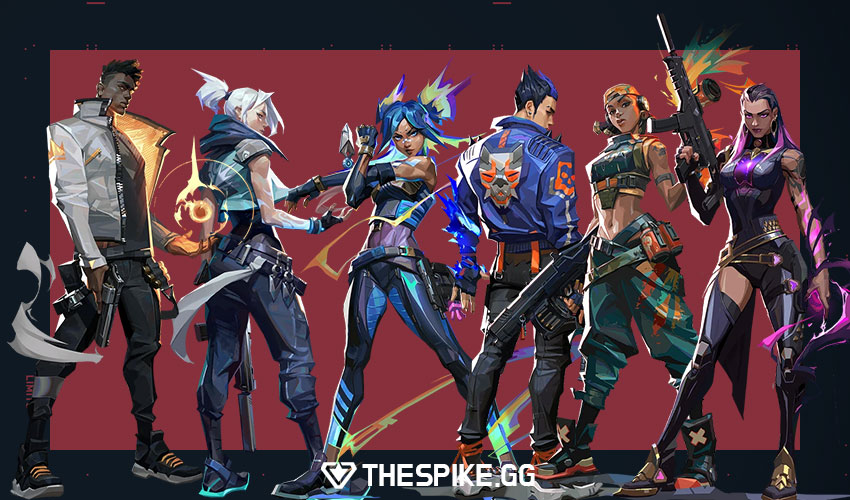

DUELISTAS
Los duelistas en Valorant son agentes agresivos y autosuficientes diseñados para "abrir" sitios (entry fraggers), creando espacio para su equipo al tomar los primeros duelos y asegurar eliminaciones. Utilizan habilidades de movimiento rápido, destellos (flashes) o herramientas de autoprotección para entrar primero y desequilibrar a la defensa.
Jett: Ideal para entrar rápido. Usa sus humos para cubrirse y su "Deslizamiento" para posicionarse o escapar.
Raze: Especialista en daño de área y movimiento explosivo para limpiar rincones y forzar enemigos fuera de posición.
Reyna: Extremadamente autosuficiente, utiliza sus habilidades para curarse o volverse invulnerable tras conseguir una baja.
Neon: Utiliza su velocidad extrema para descolocar defensas y entrar a los sitios.
Yoru: Agente de infiltración que usa teletransportes y señuelos para engañar y desengancharse.
Phoenix: Duelista versátil que usa sus flashes para cegar enemigos y puede autocurarse con su fuego.
Iso: Enfocado en duelos individuales, crea escudos para protegerse mientras avanza.

INICIO